كيف تدير الطلبات والشركاء والكتالوج والتقارير من مكان واحد
الإصدار 2.4 · 19 سبتمبر 2026 · للمسؤولين فقط
المحتويات
قبل أن تبدأ
اليوم
الطلبات
أسئلة العملاء
الشركاء
الكتالوج: المنتجات والصور والفئات والكوبونات
العملاء والمسؤولون
التقارير
السجل
الإعدادات
مهام يومية خطوة بخطوة
معاني الحالات والمصطلحات
1. قبل أن تبدأ
لوحة الإدارة هي مكان المصنع: منها تُسند الطلبات للشركاء، وتُدار بيانات المنتجات والصور والأسعار، وتُتابع مديونيات الشركاء، وتُقرأ التقارير على مستوى الشبكة كلها. الشريك لا يرى منها شيئًا؛ هو يرى بوابته الخاصة فقط.
الدخول
افتح صفحة تسجيل الدخول وأدخل رقم هاتفك وكلمة المرور.
الحساب الذي يملك صلاحية «مسؤول» يفتح على صفحة اليوم مباشرة.
لمنح مسؤول جديد أو سحب الصلاحية: العملاء ← تبويب المسؤولون (القسم 7).
الشاشة
القائمة الجانبية (يمين): مقسّمة إلى التشغيل، الشبكة، الكتالوج، الأشخاص، المتابعة. زر «طيّ القائمة» يوسّع مساحة العمل.
الشريط العلوي (يسار): أيقونة المتجر تفتح الموقع في تبويب جديد، والجرس يعرض التنبيهات.
على الهاتف تتحول القائمة إلى شريط سفلي بأهم الصفحات، وتتحول الجداول إلى بطاقات.
كل الأرقام في اللوحة بالأرقام الإنجليزية، والمبالغ بالجنيه المصري. «ج.م» تعني جنيه.
2. اليوم /admin
صفحة البداية تجيب على سؤال واحد: ما الذي يحتاج قرارك الآن؟ لا تعرض إجماليات تاريخية.
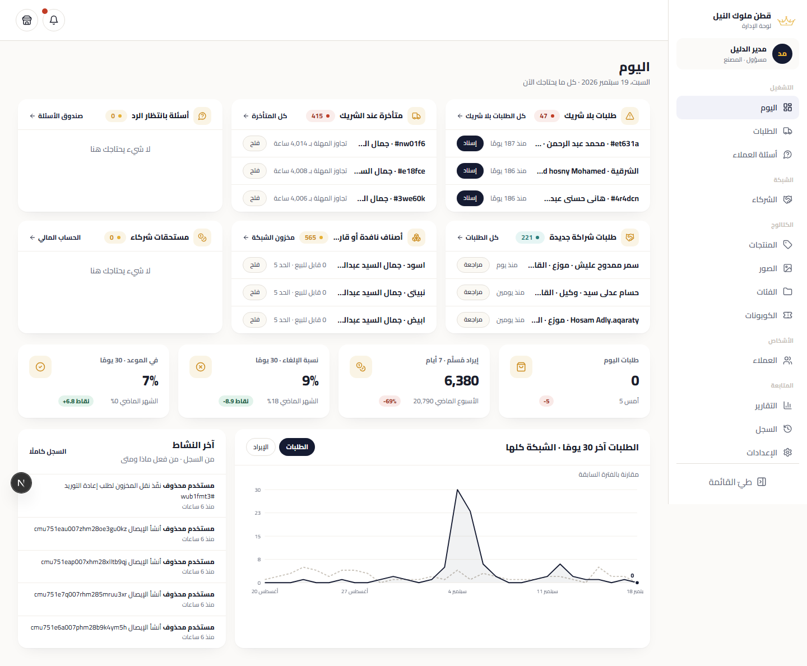
اليوم: بطاقات الطوابير في الأعلى، ثم الأرقام، ثم آخر التغييرات.
الطوابير
البطاقة
ماذا تعني
الإجراء
طلبات بلا شريك
طلبات لم تُسند لأي شريك (لا توجد قاعدة توجيه لمحافظتها، أو الشريك متوقف).
افتح الطلب وأسنِده يدويًا، أو أضف شريكًا للمحافظة في تبويب التوجيه.
متأخرة عند الشريك
طلبات تجاوزت مهلة التأكيد أو الشحن المحددة لذلك الشريك.
تواصل مع الشريك أو أعد الإسناد.
أسئلة بانتظار الرد
رسائل عملاء مفتوحة على طلباتهم.
ردّ من صفحة أسئلة العملاء.
طلبات شراكة
أشخاص تقدموا للانضمام كوكلاء أو موزعين.
راجعهم من الشركاء ← طلبات الشراكة.
أصناف نفدت أو قاربت
أصناف تحت حد التنبيه لدى الشبكة كلها.
راجع مخزون الشبكة وخطّط للإنتاج.
مستحقات شركاء
دفعات تجاوزت تاريخ استحقاقها.
سجّل الدفعة أو تابع الشريك من حسابه المالي.
كل بطاقة تعرض أقدم ثلاثة صفوف وعدد الإجمالي؛ «عرض الكل» يفتح القائمة كاملة مع الفلتر المناسب.
الأرقام
طلبات اليوم، إيراد الطلبات المُسلَّمة، نسبة الإلغاء، نسبة الالتزام بالمواعيد، لليوم وسبعة أيام وثلاثين يومًا، مع المقارنة بالفترة السابقة. المصدر هو نفس نظام التقارير الذي يقرأه الشركاء.
آخر التغييرات
آخر عشر حركات على الحالات في الشبكة ومن قام بها. النسخة الكاملة في السجل.
3. الطلبات /admin/orders
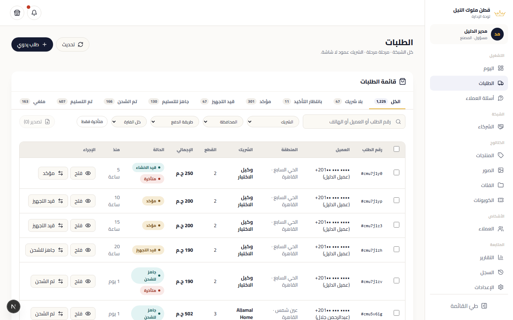
قائمة الطلبات: تبويبات المراحل بعدّاداتها، فلاتر، وإجراء الحالة التالية على كل صف.
القائمة
تبويبات المراحل: الكل، بلا شريك، بانتظار التأكيد، مؤكد، قيد التجهيز، جاهز للتسليم، تم الشحن، تم التسليم، ملغي. الرقم بجانب كل تبويب هو العدد الحالي.
الفلاتر: بحث برقم الطلب أو اسم العميل أو هاتفه، الشريك، المحافظة، طريقة الدفع، الفترة، و«متأخرة فقط».
عمود الشريك يظهر للمسؤول فقط؛ الشريك لا يرى شركاء آخرين.
الإجراء على الصف: زر الحالة التالية ينقل الطلب خطوة واحدة (مؤكد ← قيد التجهيز ← جاهز للشحن ← تم الشحن). «فتح» يعرض التفاصيل.
التحديد الجماعي: حدّد عدة طلبات لتغيير الحالة، أو الإسناد لشريك، أو تصدير CSV، أو طباعة قائمة التجهيز.
طلب يدوي: زر في الأعلى لإنشاء طلب نيابة عن عميل اتصل هاتفيًا.
عند الرجوع من تفاصيل طلب بزر «رجوع» أو زر المتصفح، تعود القائمة إلى نفس الصفحة ونفس الصف.
الإسناد وإعادة الإسناد: اختر شريكًا يملك المخزون؛ الحجز ينتقل معه ويُكتب في دفتر الحركات. لا يمكن تأكيد طلب غير مُسند.
البنود: تعديل الكميات أو إضافة صنف من مخزون الشريك ثم «حفظ البنود وإعادة الحساب».
الحالة: نفس التسلسل؛ الإلغاء يطلب سببًا ويُعيد المخزون المحجوز.
إثبات التسليم: رفع صورة عند التسليم وعرضها لاحقًا.
سؤال العميل: إن كان للطلب رسالة مفتوحة تظهر هنا ويمكن الرد عليها.
الجدول الزمني: كل تغيير حالة ومن قام به ومتى.
قائمة التجهيز
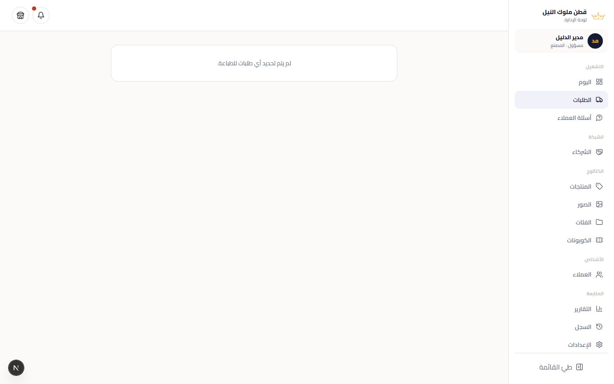
قائمة التجهيز: الأصناف المطلوبة مجمّعة بالكود لتجهيز عدة طلبات دفعة واحدة.
حدّد الطلبات ثم «طباعة قائمة التجهيز»؛ الصفحة مخصصة للطباعة وتجمّع الكميات حسب الكود (SKU).
4. أسئلة العملاء /admin/order-tickets
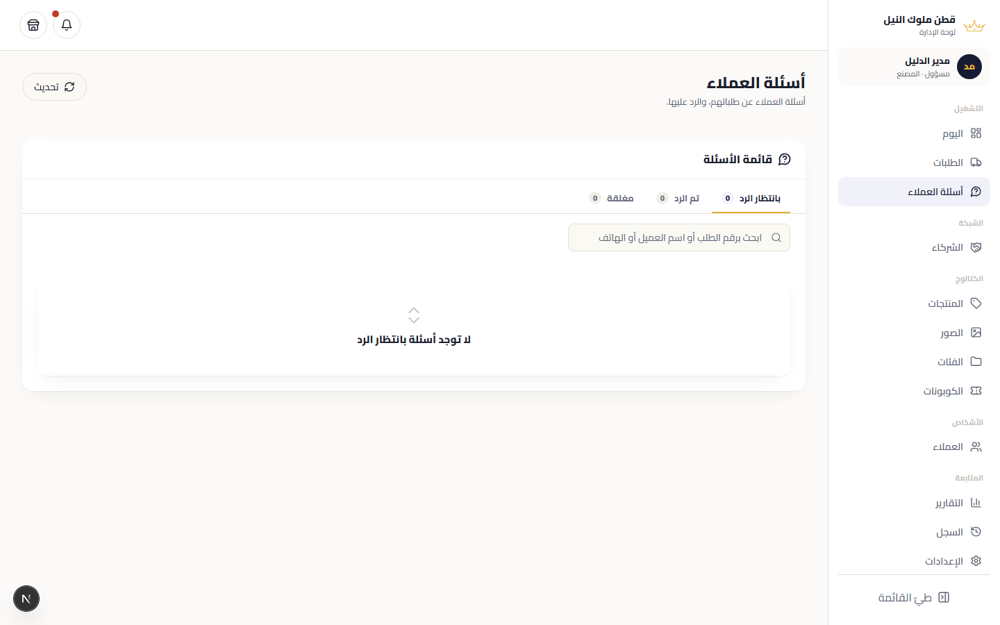
رسائل العملاء على طلباتهم: المفتوحة أولًا.
كل رسالة مرتبطة بطلب. افتحها، اقرأ السياق، ردّ، ثم أغلقها. عدد المفتوح يظهر في طابور اليوم.
5. الشركاء /admin/partners
الشركاء نوعان: وكيل يستلم من المصنع ويبيع ويخدم موزعيه، وموزع مرتبط بوكيل ويستلم منه. الشريك يملك مخزونه فقط؛ الكتالوج والأسعار ملك الإدارة.
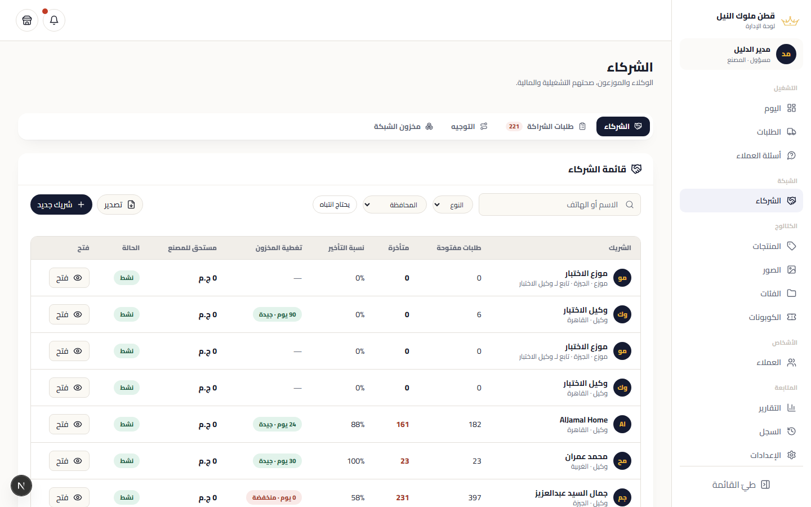
قائمة الشركاء: الصحة في نظرة واحدة، مع تبويبات طلبات الشراكة والتوجيه ومخزون الشبكة.
القائمة
لكل شريك: الطلبات المفتوحة، نسبة التأخير، تغطية المخزون بالأيام، الرصيد المستحق للمصنع، والحالة. البحث والفلترة بالنوع والمحافظة والصحة.
تغطية المخزون = كم يومًا يكفي المخزون الحالي بسرعة البيع الحالية (وسيط الأصناف). أقل من 7 أيام «منخفضة»، أقل من 21 «قريبة»، وإلا «جيدة».
تبويب طلبات الشراكة
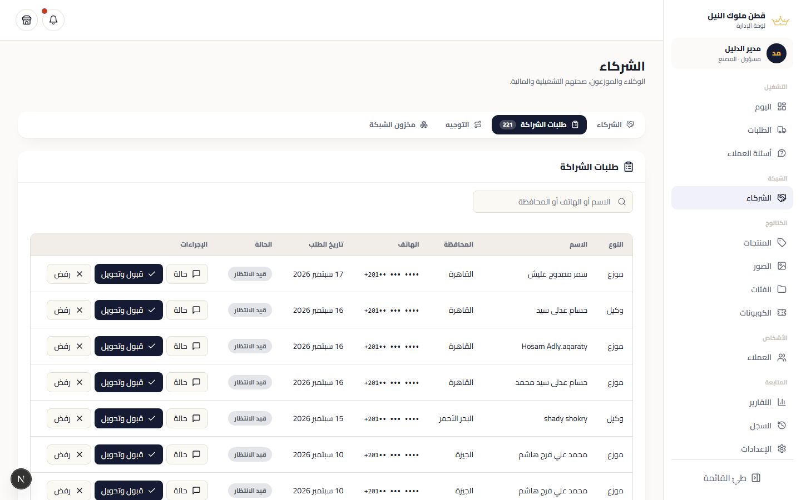
المتقدمون للشراكة: قبول يحوّل الطلب إلى شريك، أو رفض.
تبويب التوجيه
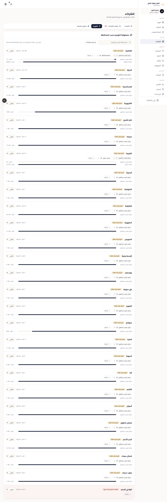
التوجيه: كل محافظة وشركاؤها. المحافظة بلا شريك نشط تُظلَّل وتظهر في طابور «بلا شريك».
عندما يطلب عميل من محافظة، يُسند الطلب تلقائيًا لأحد شركائها بالتناوب. من هنا تضيف شريكًا لمحافظة أو توقفه مؤقتًا. حجم الطلبات لكل شريك خلال 30 يومًا يظهر بجانب اسمه.
تبويب مخزون الشبكة
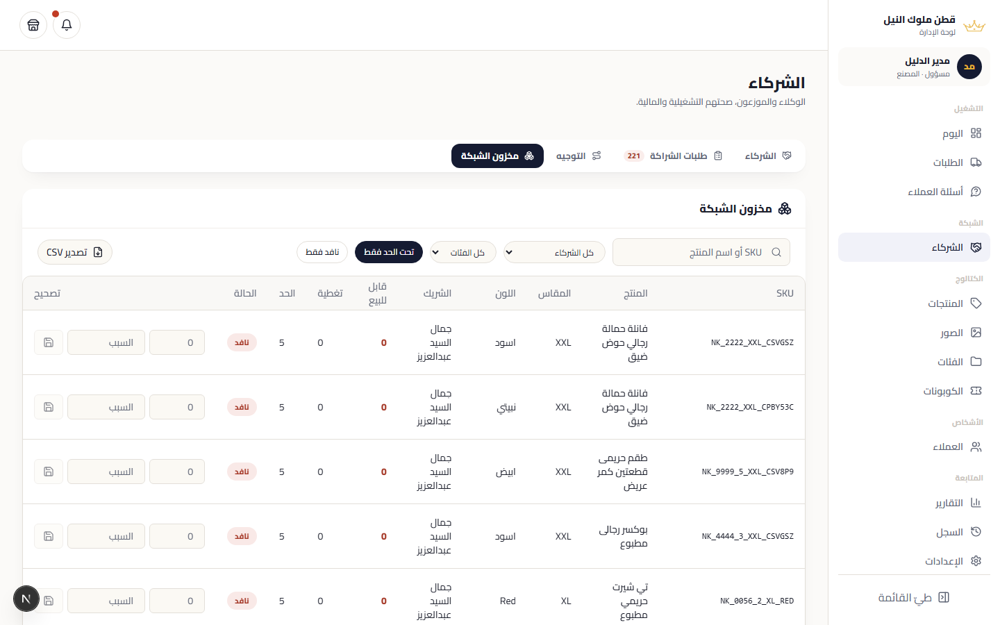
مخزون الشبكة: الأصناف وكمياتها لدى كل شريك، مع فلاتر الشريك والفئة والأصناف المنخفضة.
ملف الشريك
افتح أي شريك لتصل إلى ستة تبويبات:
التبويب
المحتوى
الملف
البيانات والاتصال والوكيل المرتبط وزر التفعيل/الإيقاف.
الأداء
تقارير هذا الشريك كما يراها هو (مبيعات، تجهيز، مخزون).
الطلبات
قائمة الطلبات مفلترة على هذا الشريك.
المخزون
مخزونه صنفًا صنفًا، قابل للتعديل، وكل تعديل يُكتب في دفتر الحركات.
الحساب المالي
نسبة الشراء، الاستلامات من المصنع، الدفعات المسجلة، الرصيد الجاري، وتاريخ الاستحقاق التالي. من هنا تُسجَّل الدفعات.
الإعدادات
كل أرقام التشغيل لهذا الشريك: مهلة التأكيد والشحن، أيام العمل، الطاقة اليومية، حد المخزون المنخفض، أيام الركود، التغطية المستهدفة، نسبة الشراء. القيمة الافتراضية للشبكة تظهر بجانب كل قيمة.
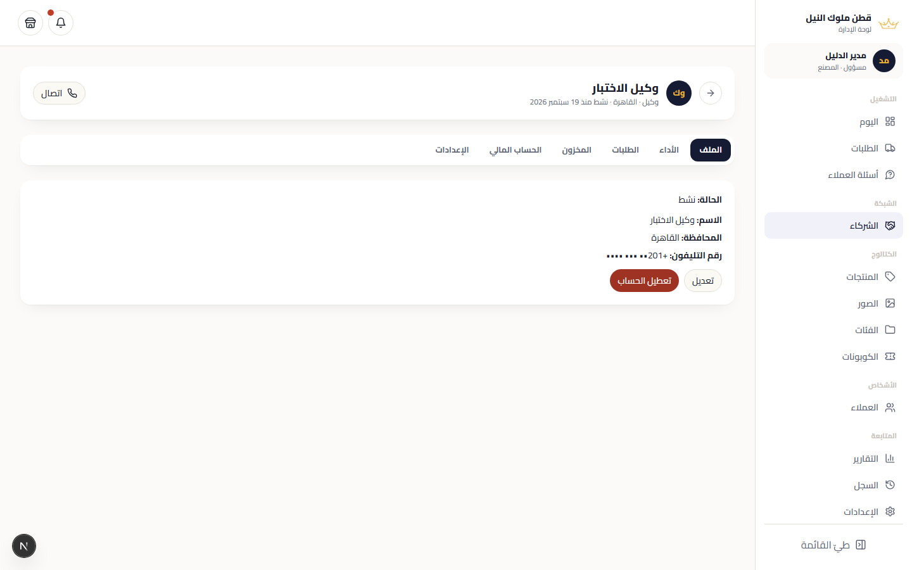
الملف.
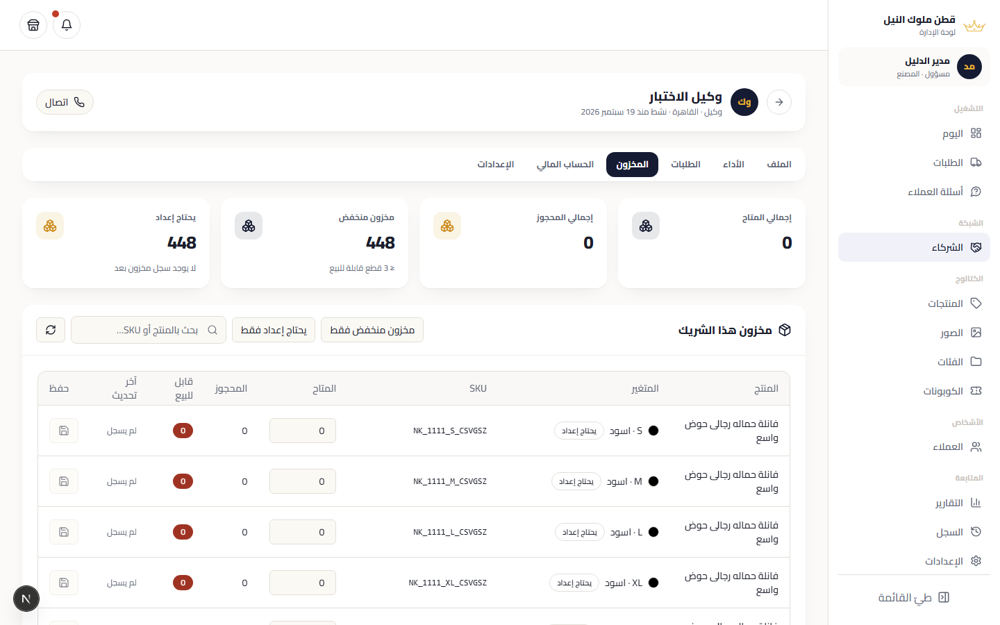
المخزون.
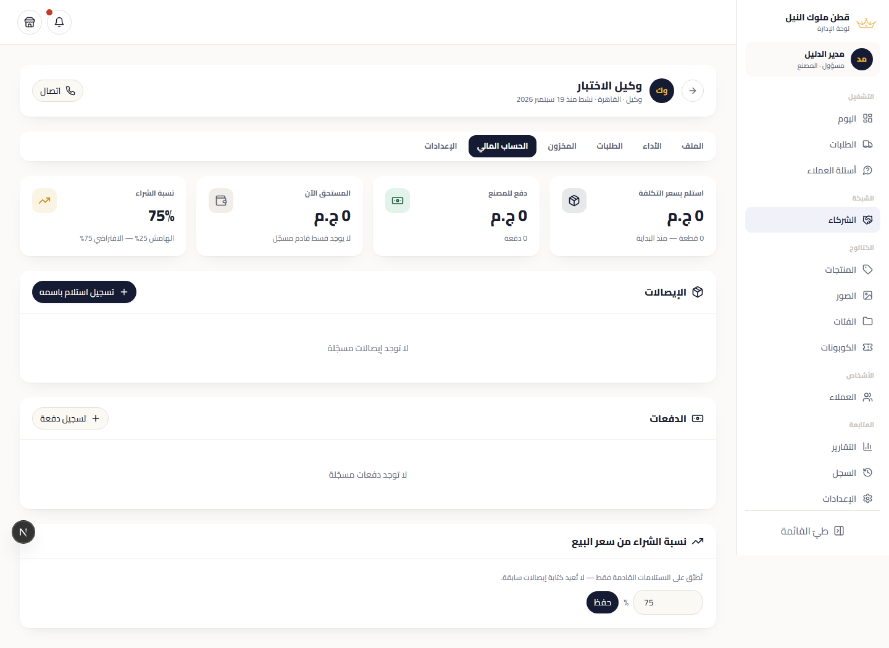
الحساب المالي: الاستلامات تُنشئ الدين، والدفعات تُخفّضه، والرصيد هو الفرق.
نموذج الحساب: الشريك يشتري البضاعة من المصنع بنسبة من سعر البيع (نسبة الشراء، تختلف من شريك لآخر). كل استلام من المصنع يسجّل دينًا بقيمة القطع × السعر × النسبة، ويسدده الشريك دفعة أولى ثم أقساطًا تسجّلها الإدارة هنا.
القاعدة: الإدارة تنشئ المنتجات والألوان والمقاسات والأسعار والصور. الشريك يُدخل فقط كم قطعة يملك من كل مقاس تعرّفه الإدارة.
المنتجات
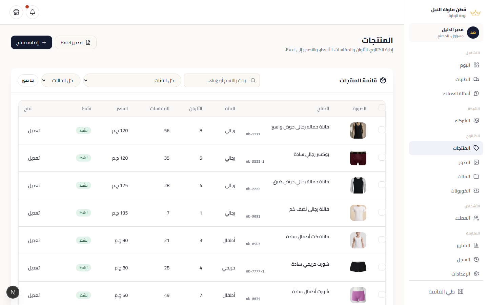
قائمة المنتجات: بحث بالاسم أو الرابط، فلاتر الفئة والحالة و«بلا صور»، والتعديل الجماعي. تحت كل اسم يظهر رابط المنتج (slug).
حدّد منتجات ثم تعديل جماعي لتغيير الفئة أو الحالة أو الوسوم أو السعر بمبلغ أو نسبة، مع معاينة قبل التأكيد.
«بلا صور» يعرض المنتجات التي لا تملك صورة — لا تُنشر بدونها.
صفحة المنتج
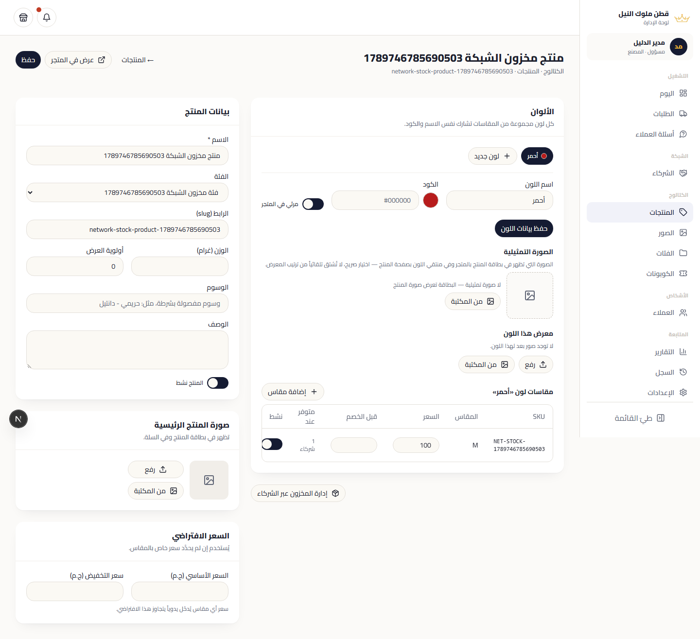
المنتج ← الألوان ← المقاسات. لكل لون معرض صور وصورة تمثيلية، ولكل مقاس كود وسعر وحالة.
أنشئ المنتج (الاسم، الفئة، الوصف، الوزن، الوسوم).
أضف لونًا (الاسم والكود اللوني) ثم المقاسات دفعة واحدة؛ يُولَّد كود SKU ورابط لكل مقاس.
ارفع صور اللون أو اخترها من مكتبة الصور، رتّبها بالسحب، وحدّد الصورة التمثيلية؛ الأولى تظهر على بطاقة المنتج في المتجر.
اختر الصورة الرئيسية للمنتج.
إخفاء لون يُخفي كل مقاساته من المتجر دون حذف شيء.
لا يوجد حقل مخزون هنا. المخزون يُدخله الشريك من بوابته، ويظهر لك في مخزون الشبكة وفي ملف كل شريك.
الصور
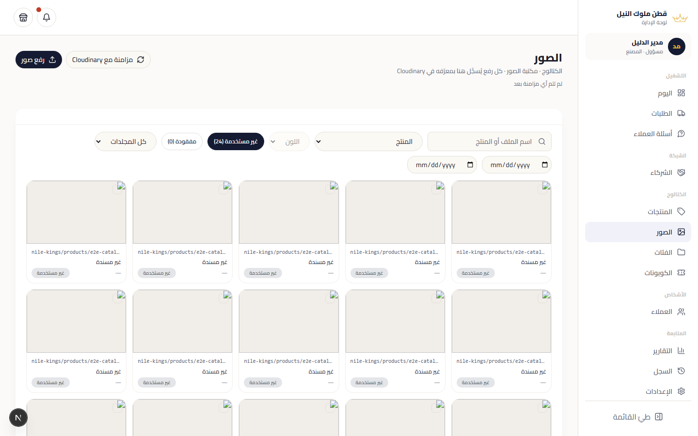
مكتبة الصور: كل صورة واستخدامها (أي منتج، أي لون، رئيسية أم معرض، أو غير مستخدمة).
رفع متعدد بالسحب والإفلات، فلترة بالمنتج واللون و«غير مستخدمة».
لا يمكن حذف صورة مستخدمة. حذف غير المستخدمة يزيلها من التخزين السحابي أيضًا.
مزامنة: تستورد الصور الموجودة في التخزين السحابي وغير المسجلة، وتعلّم المفقودة.
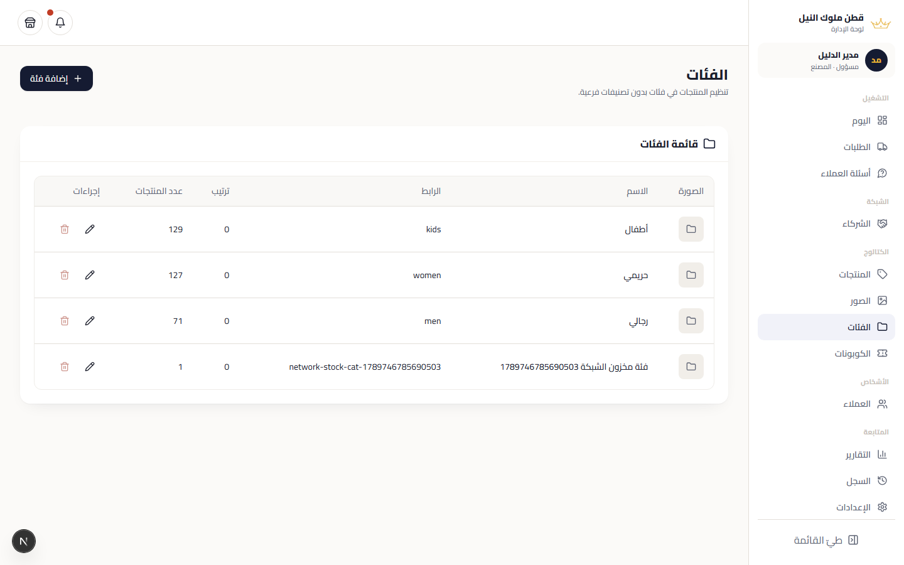
الفئات: الاسم والرابط والترتيب وصورة الفئة.
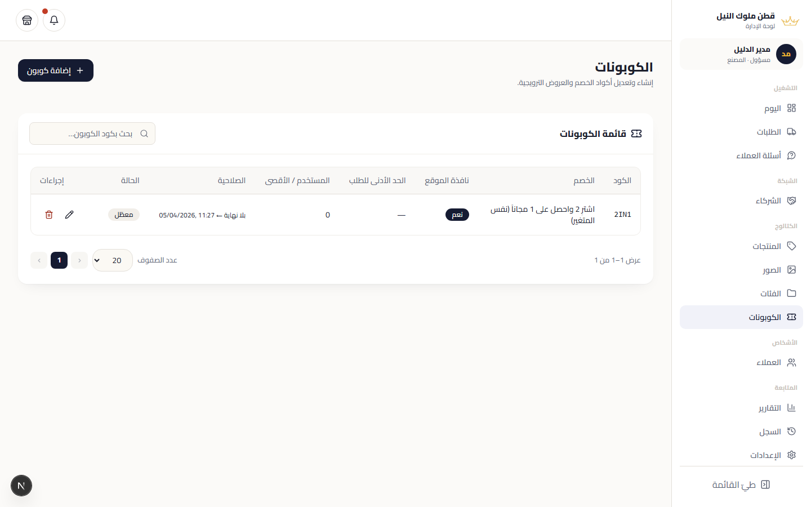
الكوبونات: الكود، نوع الخصم، الصلاحية، والرسالة الترويجية.
7. العملاء والمسؤولون /admin/clients
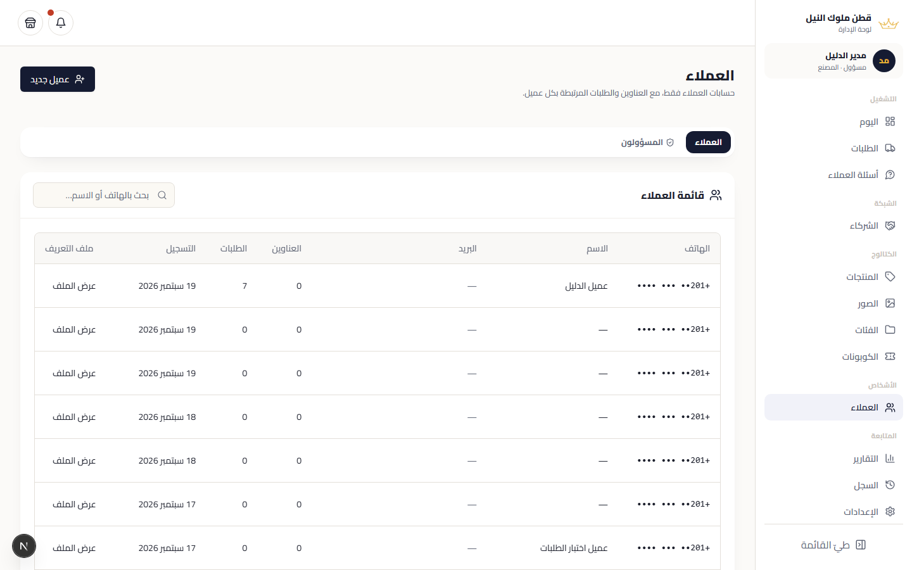
العملاء: بحث بالاسم أو الهاتف، وفتح سجل طلبات العميل.
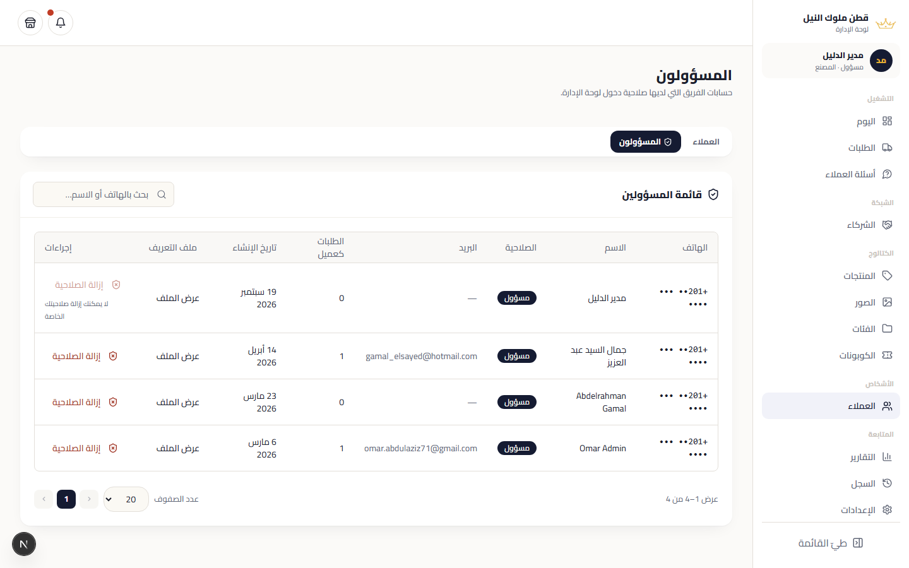
تبويب المسؤولون: منح صلاحية الإدارة لعميل أو سحبها.
المسؤول هو عميل يحمل صلاحية. ابحث عن الشخص برقم هاتفه، ثم امنحه الصلاحية من هذا التبويب. كل منح أو سحب يُكتب في السجل.
8. التقارير /admin/reports/…
أربعة تقارير على مستوى الشبكة كلها، ولكل منها سؤال يجيب عليه. اختر الفترة من الشريط (اليوم، 7 أيام، 30 يومًا، هذا الشهر، الشهر الماضي، مخصص)؛ كل رقم يُقارن بالفترة المساوية السابقة.
التقرير
السؤال
البطاقات
متى تستخدمه
المبيعات
كم بعنا، وهل ننمو؟
الإيراد، الطلبات، القطع، متوسط الطلب، نسبة الإلغاء
أسبوعيًا، ولمعرفة أي شريك أو محافظة أو منتج يقود النمو.
التجهيز
ما سرعة الشركاء والتزامهم؟
وسيط وقت التأكيد والشحن، نسبة التأخر، نسبة التسليم، أسباب الإلغاء
لمعرفة من يتأخر.
المخزون
ماذا تملك الشبكة، وإلى متى يكفي؟
قابل للبيع، القيمة بالتكلفة وبالسعر، تغطية الأيام، الأصناف الراكدة، النافدة
قبل جولة إنتاج.
المال
أين نقف مع كل شريك؟
المستحق على الشركاء، المدفوع، الرصيد، المحصَّل من العملاء، الدفع عند الاستلام المنتظر
عند التسوية.
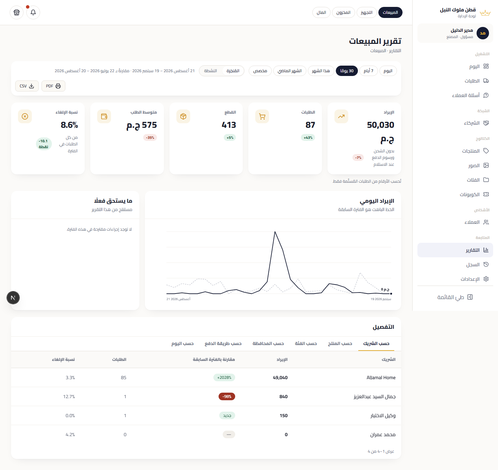
المبيعات: الفترة، ثم زرّا «المُنجَزة» و«النشطة»، ثم البطاقات والرسم اليومي والتفصيل بالشريك والمنتج والفئة والمحافظة وطريقة الدفع واليوم.
ما تعنيه أرقام المبيعات
المُنجَزة (الافتراضي): الطلبات التي تم تسليمها فقط. النشطة: الطلبات من التأكيد حتى الشحن ولم تُسلَّم بعد. الطلبات غير المدفوعة والملغاة لا تدخل في أيٍّ منهما.
الإيراد = قيمة البضاعة بعد الخصم، بدون الشحن ورسوم الدفع عند الاستلام. لذلك يتطابق مع تقرير المال.
نسبة الإلغاء تُحسب من كل الطلبات في الفترة أيًا كان الاختيار.
جدول «حسب المنتج» صف واحد لكل منتج (كل مقاساته مجمّعة)؛ التفصيل بالمقاس في تقرير المخزون.
كل جدول له زر تصدير CSV، وله زر PDF يفتح صفحة جاهزة للطباعة.
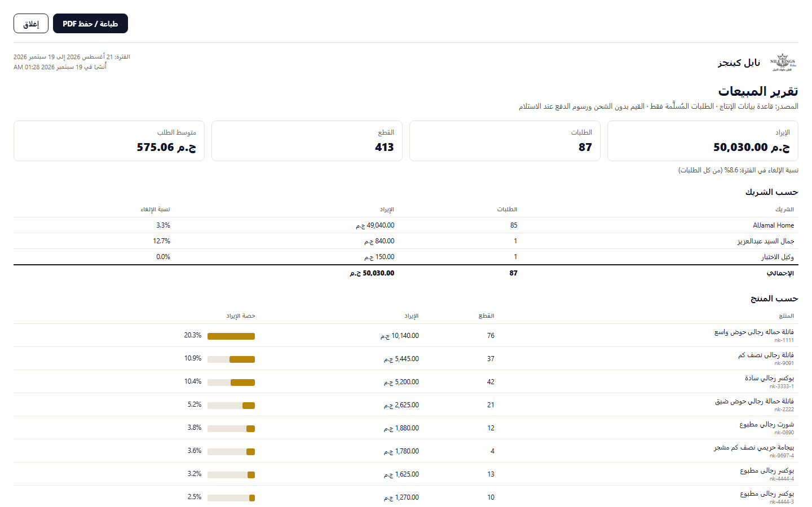
صفحة PDF: اضغط «طباعة / حفظ PDF» ثم اختر «حفظ كـ PDF» في نافذة المتصفح. الجداول الطويلة تعرض أول 25 صفًا وصفًا يجمع الباقي.
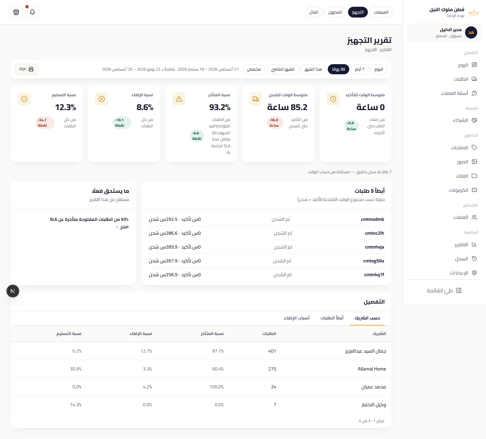
التجهيز.
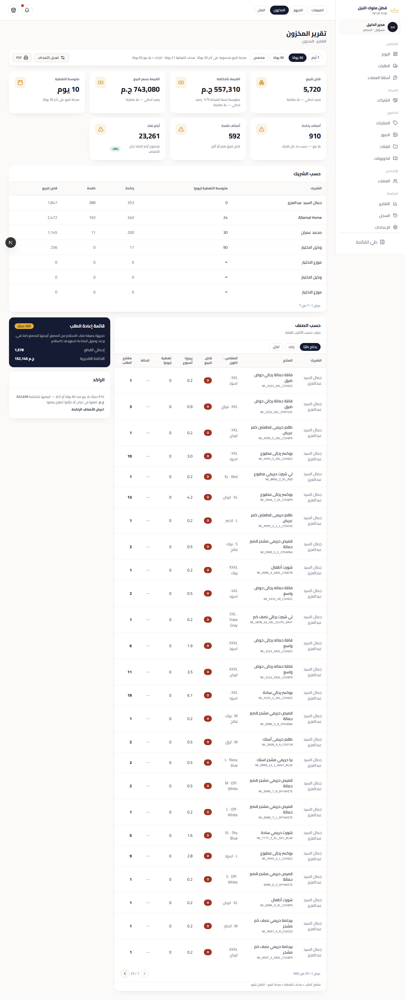
المخزون.
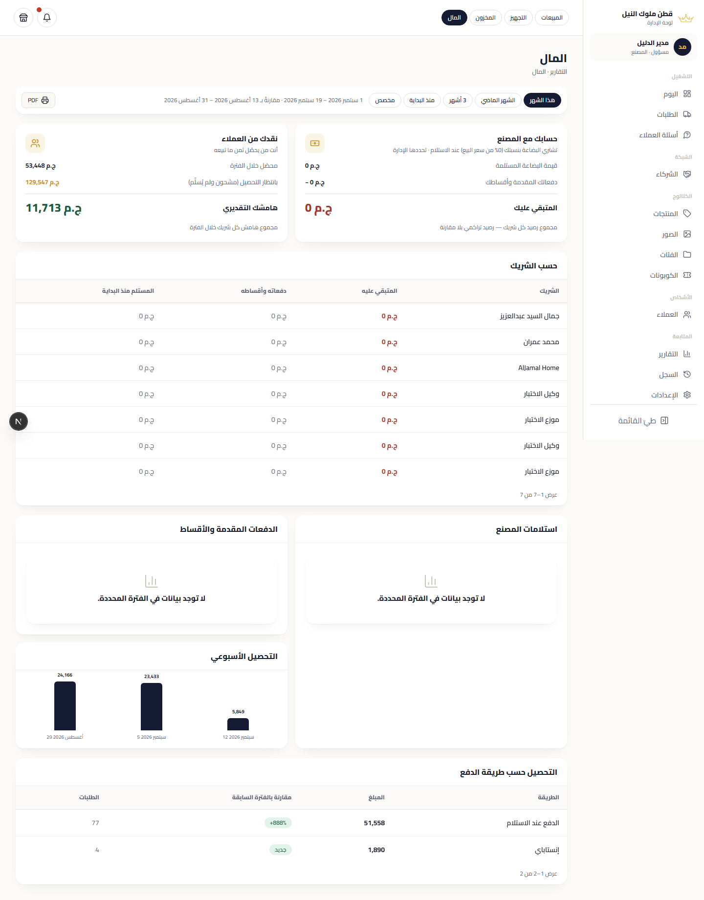
المال: جانب المصنع (ما على الشركاء) وجانب النقد (ما حُصِّل من العملاء) منفصلان.
الرسم البياني: الخط الداكن هو الفترة الحالية، والخط المتقطع الباهت هو الفترة السابقة. مرّر المؤشر لترى قيمة اليوم في الفترتين.
9. السجل /admin/audit
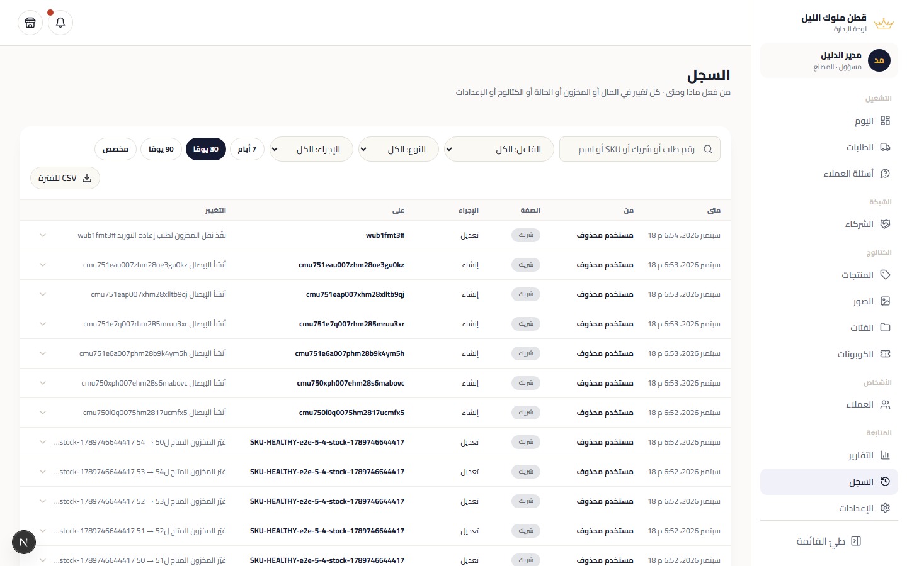
السجل: من فعل ماذا ومتى، مع فرق قبل/بعد بكلمات واضحة.
كل تغيير في المال أو المخزون أو الحالات أو الكتالوج أو التوجيه أو الصلاحيات أو الإعدادات يُكتب هنا. فلترة بالمنفّذ ونوع الكيان والإجراء والتاريخ، وبحث برقم الطلب أو الشريك أو الكود. نفس السجل يظهر في سياقه داخل الطلب والشريك والمنتج.
10. الإعدادات /admin/settings
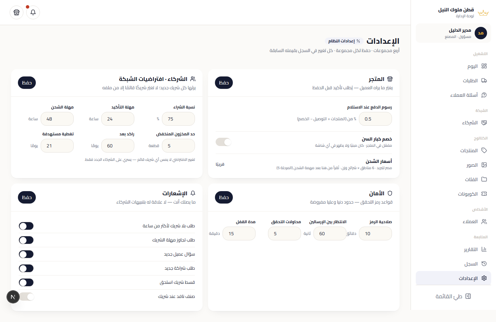
الإعدادات: المتجر، افتراضيات الشركاء، الأمان.
المتجر: رسوم الدفع عند الاستلام، عرض كبار السن، الشحن.
الشركاء: القيم الافتراضية التي يرثها كل شريك جديد (المهل، الطاقة، حدود المخزون، نسبة الشراء…). تغييرها لا يمس الشركاء الحاليين؛ لهم إعداداتهم في ملف كل واحد.
الأمان: قواعد رمز التحقق.
أي إعداد يغيّر سعرًا يراه العميل يطلب تأكيدًا، ويُكتب بالقيمة القديمة والجديدة في السجل.
11. مهام يومية خطوة بخطوة
روتين الصباح (5 دقائق)
افتح اليوم. ابدأ بـ «بلا شريك»: أسنِد كل طلب.
«متأخرة عند الشريك»: تواصل مع الشريك أو أعد الإسناد لشريك قريب يملك المخزون.
«أسئلة بانتظار الرد»: ردّ ثم أغلق.
«مستحقات شركاء»: سجّل ما وصل من دفعات.
إسناد طلب بلا شريك
الطلبات ← تبويب «بلا شريك» ← فتح.
في صندوق الإسناد اختر شريكًا في نفس المحافظة يملك الأصناف (تظهر الكميات المتاحة بجانب كل شريك).
احفظ. يُحجز المخزون لدى الشريك ويظهر الطلب في بوابته فورًا.
تسجيل دفعة من شريك
الشركاء ← افتح الشريك ← الحساب المالي.
«تسجيل دفعة»: النوع (دفعة أولى/قسط)، المبلغ، التاريخ، ملاحظة.
الرصيد يتحدث فورًا ويختفي الشريك من طابور المستحقات.
إضافة منتج جديد بصوره
المنتجات ← «منتج جديد» ← البيانات الأساسية.
لون جديد ← المقاسات ← الأسعار.
ارفع الصور في معرض اللون، رتّبها، حدّد التمثيلية والرئيسية.
فعّل المنتج. يظهر في المتجر كـ «غير متوفر» حتى يُدخل شريك مخزونه.
تقرير شهري بصيغة PDF
التقارير ← المبيعات ← الفترة «الشهر الماضي» ← «المُنجَزة».
زر PDF ← تُفتح صفحة الطباعة في تبويب جديد ← «طباعة / حفظ PDF».
كرّر للتجهيز والمخزون والمال إن لزم.
12. معاني الحالات والمصطلحات
الحالة
المعنى
قيد الإنشاء
طلب إنستاباي لم تصل قيمته بعد؛ المخزون محجوز حتى التأكيد أو الإلغاء.
مؤكد
الشريك أكد الطلب وبدأ الحجز الفعلي.
قيد التجهيز
يُجهَّز للتسليم.
جاهز للشحن
مغلّف وبانتظار المندوب أو شركة الشحن.
تم الشحن
خرج من عند الشريك.
تم التسليم
وصل للعميل؛ هذه هي «المبيعات المُنجَزة».
ملغي
أُلغي بسبب مسجّل؛ المخزون المحجوز عاد.
المصطلح
المعنى
SKU
كود المقاس: منتج + لون + مقاس. يظهر تحت اسم الصنف في كل الجداول.
الرابط (slug)
معرّف المنتج في عنوان صفحته بالمتجر. يميّز المنتجات المتشابهة الأسماء.
قابل للبيع
المتاح ناقص المحجوز للطلبات المفتوحة.
تغطية المخزون
كم يومًا يكفي المخزون بسرعة البيع الحالية.
صنف راكد
لم يُبع منه شيء خلال عدد الأيام المحدد في الإعدادات (افتراضيًا 60).
نسبة الشراء
النسبة من سعر البيع التي يدفعها الشريك للمصنع مقابل البضاعة.
الإيراد الصافي
قيمة البضاعة بعد الخصم، بدون الشحن ورسوم الدفع عند الاستلام.
قاعدة التوجيه
ربط محافظة بشريك أو أكثر ليُسند إليهم طلباتها بالتناوب.
لقطات الشاشة من نسخة اختبار مطابقة للإنتاج بتاريخ 19 سبتمبر 2026؛ أرقام الهواتف مخفية.